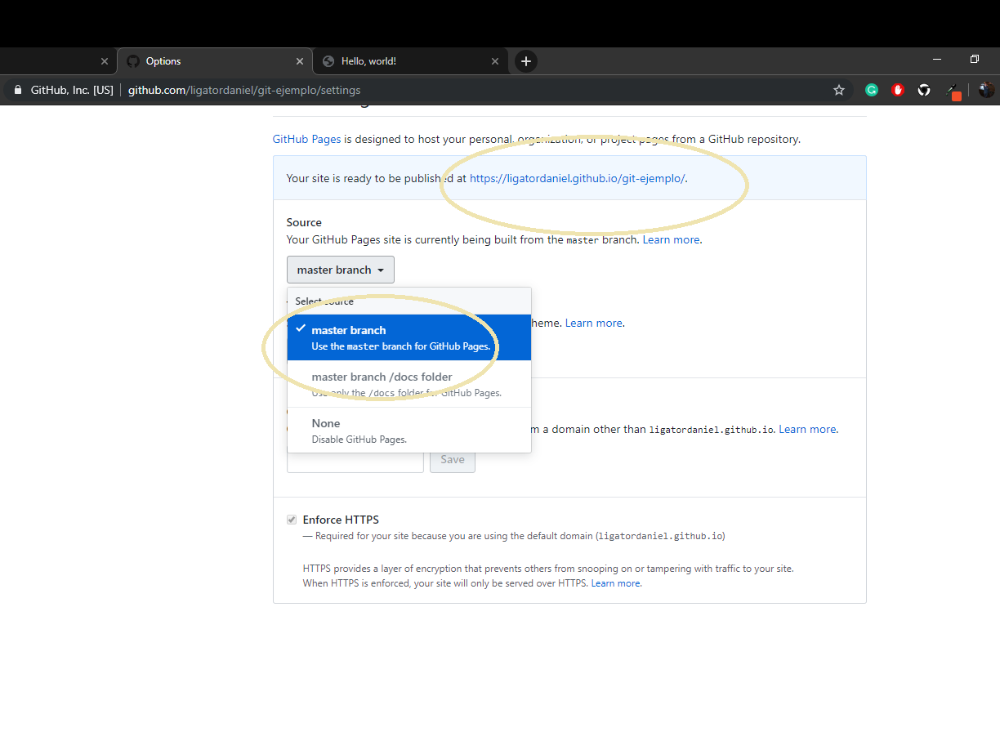

Solo 1 vez por proyecto
- git init
- git status -s
- git add .
- git commit -m "inicio proyecto nuevo"
- https://github.com/
- git remote add origin http:git......
- git push -u origin master
¿Para que sirven?
- iniciar
- consulta si hay archivos modificados
- salva todo el proyecto completito
- despues de cualquier cambio SIEMPREagregar comentario
- logear y crear nuevo respositorio
- linkea con la direccion de respositorio
- salva archivos en la nube
Uso regular
- git status -s
- git add .
- git add index.html
- git commit -m "comentario 1"
- git log --oneline
- git reset --hard a532423
- git push
lo que hacen
- consulta si hay archivos modificados
- salva todo el proyecto completito
- salva uno en especifico index.html en este caso
- despues de cualquier cambio SIEMPRE agregar comentario
- consulta cuales versiones hay subidas
- regresa a la version a a532423 en este caso
- sube todo a la nube
Crear un hosting con Git
